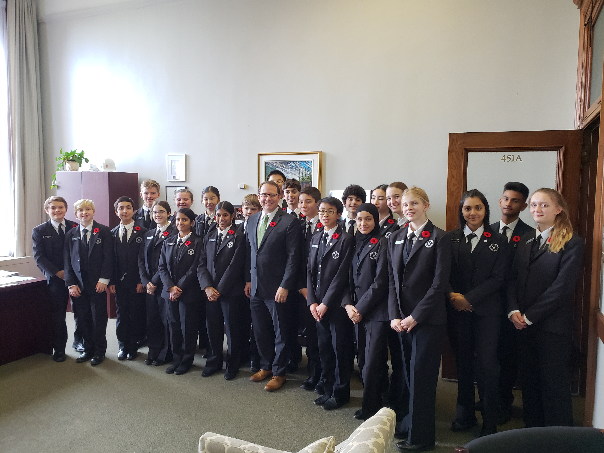
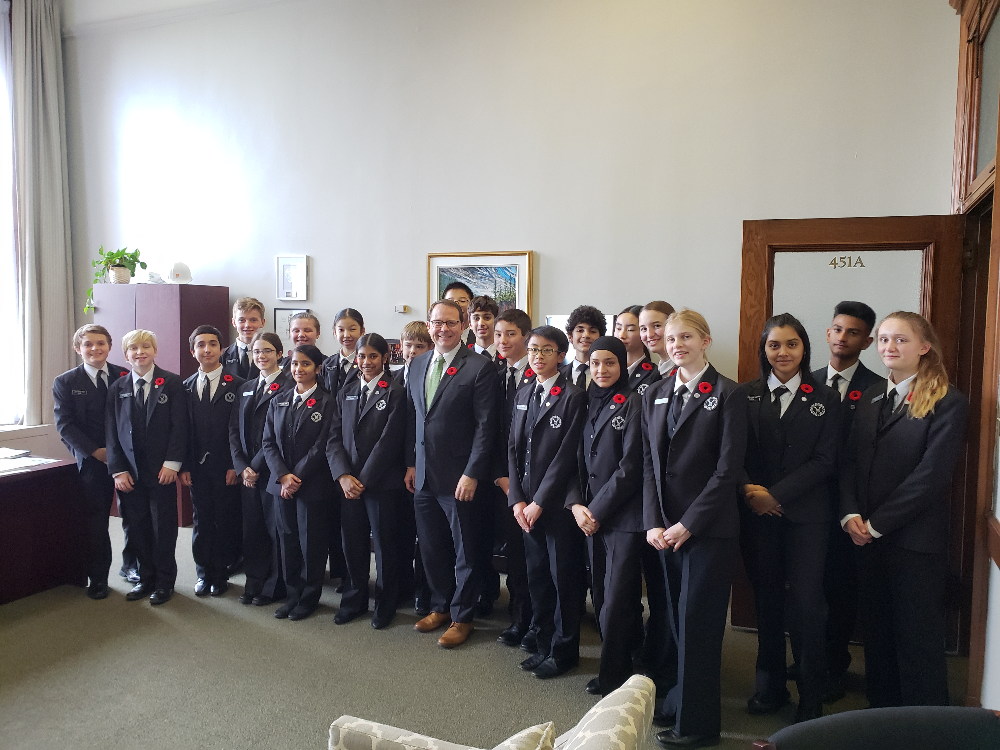

Homepage Basic Facts About Pearl Dance Legislative Page Program References

Pages work in the Legislative Assembly of Ontario for two to four weeks, with a granted leave of absence for school. They wear a traditional uniform and act as messengers in the Legislative Chamber, whether it is bringing water to the MPPs or delivering notes in and out of Queen’s Park. They meet with politicians and officials, learn how laws are made, and learn how the Province of Ontario is governed. On Fridays, they go on a field trip or participate in an educational activity.
| Name of MPP | Riding | Party | Seat Number | Minister |
|---|---|---|---|---|
| Hon. Stephen Lecce | King–Vaughan | PC | 2 | Minister of Education |
| Hon. Doug Ford | Etobicoke–North | Leader of the PC Party | 6 | Premier |
| Andrea Horwath | Hamilton Centre | Leader of the NDP Party(New Democratic Party - Official Opposition) | 71 | N/A |
Here is a video of me in the Chamber!
This experience taught me so much about what goes on behind the scenes in the planning of our province. I could see the
true passion in every MPP (member of provincial parliament) fighting for which rules they believe should be enforced in the
province. I also met so many incredible people and role models in Ontario. This experience was once again a dream come true and
taught me numerous amounts.
Photos (left to right)
Row 1:
1: Orientation day
2: Page captains walking with the sergeant-at-arms, Jacquelyn Gordon
Row 2:
1: Page captains walking with the sergeant-at-arms, Jacquelyn Gordon
2: Pages before entering the Chamber
Row 3:
1: Pages with the speaker, Ted Arnott
2: Pages with the head clerk, Todd Decker
Row 4:
1: Pages with the Lieutenant Governor of Ontario, Elizabeth Dowdeswell
2: Pages with the sergeant-at-arms, Jacquelyn Gordon
Row 5:
1: Pages with the Green Party leader, Mike Schreiner
2: Pages with the Liberal Party leader, John Fraser
Row 6:
1: Pages with the Progressive Conservative Party leader/Premier, Doug Ford
2: Pages with the New Democratic Party leader/Official Opposition, Andrea Horwath
Row 7:
1: Pages at Pioneer Village for their educational Friday field trip


 
